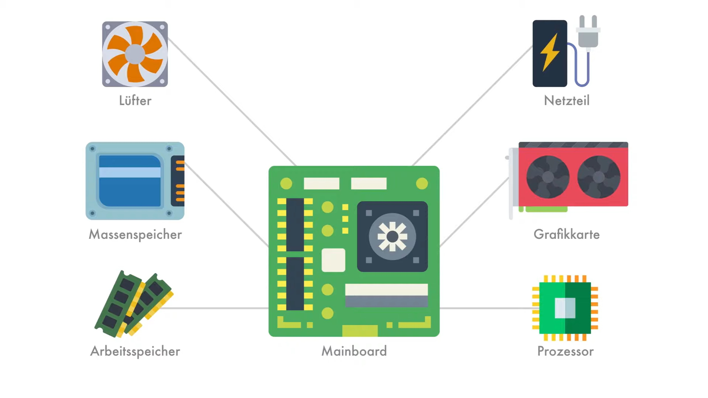
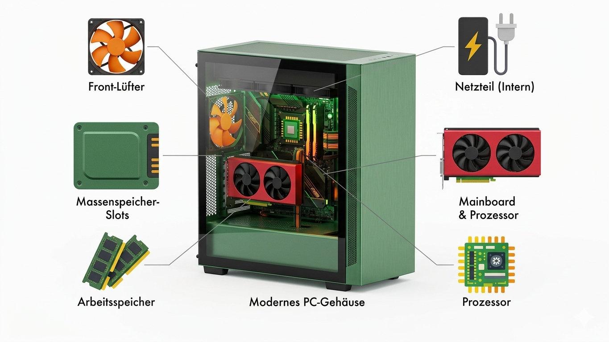

Die Montage-Reihenfolge
1. Vorbereitung des Mainboards
Außerhalb des Gehäuses
Das Mainboard stellt Steckplätze, Anschlüsse und Leiterbahnen bereit, über die alle anderen Komponenten kommunizieren. Ohne Mainboard könnten die Bauteile nicht miteinander interagieren.
- CPU
- RAM
- Grafikkarte
- SSD/HDD
- Netzteil
Führt Berechnungen aus und steuert den Datenfluss zwischen den Komponenten
Schneller Zwischenspeicher für Daten, die die CPU aktuell benötigt
Übernimmt grafikintensive Berechnungen und entlastet die CPU
Speichert Betriebssystem, Programme und Dateien: liefert Daten an CPU und Ram
Versorgt Mainboard, CPU, GPU und Speicher mit Strom
2. Gehäuse-Vorbereitung
Gehäuse-Phase
Das Gehäuse fungiert als organisatorische Hülle und Kühlsystem, das den reibungslosen Betrieb der Hardware erst ermöglicht. Ohne Gehäuse wären die Bauteile ungeschützt und würden schnell überhitzen.
- Mainboard-Halterung
- Luftstrom-Management (Airflow)
- Strom-infrastruktur
- Laufwerksschächte & Slots
- Schutz & Abschirmung
Fixiert die Hauptplatine und verhindert Kurzschlüsse, damit CPU, RAM und GPU sicher miteinander kommunizieren können.
Nutzt Lüfter und Öffnungen, um gezielt kühle Luft über CPU und Grafikkarte zu leiten und Hitze abzuführen.
Bietet einen isolierten Platz für das Netzteil und Kanäle für das Kabelmanagement, damit die Stromversorgung den Luftstrom nicht blockiert.
Ordnet SSDs, HDDs und Grafikkarten stabil an, sodass sie fest mit den Anschlüssen des Mainboards verbunden bleiben.
Bewahrt die empfindliche Elektronik vor Staub und Stößen und schirmt elektromagnetische Strahlung nach außen ab.
3.Die "Hochzeit" (Mainboard-Einbau)
IntegrationIn diesem entscheidenden Schritt wird die vorbestückte Haupteinheit permanent mit dem Gehäuse verbunden. Dies ist weit mehr als nur ein mechanischer Vorgang:
-
Präzise Ausrichtung:
Das Mainboard muss exakt über die Abstandshalter (Standoffs) platziert werden. Diese sind kritisch, um einen direkten Kontakt zwischen den Leiterbahnen der Mainboard-Rückseite und dem Metall-Chassis zu verhindern, was unweigerlich zu einem Kurzschluss führen würde.
- I/O-Panel Integration:
Das bündige Einrasten der rückseitigen Anschlüsse in die I/O-Blende stellt nicht nur die Erreichbarkeit von USB- und Audio-Ports sicher, sondern dient bei vielen Gehäusen auch der elektromagnetischen Abschirmung (EMI).
- Mechanische Stabilität:
Durch das kreuzweise Verschrauben wird eine gleichmäßige Spannungsverteilung erreicht. Dies ist besonders wichtig, da moderne CPU-Kühler und Grafikkarten ein erhebliches Eigengewicht aufweisen, das mechanischen Druck auf die Platine ausübt.
4. Erweiterungskarten & Laufwerke
Hardware-Erweiterung
Nachdem das Fundament steht, folgt die Bestückung der spezifischen Schnittstellen:
- Grafikkarte (GPU) & PCIe-Bus:
Die GPU wird in den primären PCIe-x16-Slot eingesetzt. Dieser bietet die direkte Anbindung an die CPU-Lanes für minimale Latenz. Beim Einrasten sorgt der mechanische Verschluss für festen Sitz, während die Verschraubung am Gehäuserahmen das "GPU-Sagging" (Durchbiegen der Karte) minimiert.
- Sekundäre Massenspeicher:
Während M.2-SSDs oft direkt auf dem Board sitzen, werden SATA-Laufwerke (SSD/HDD) in speziellen Schlitten oder Käfigen montiert. Dies dient der Vibrationsentkopplung (besonders bei mechanischen HDDs) und sorgt für eine geordnete Struktur innerhalb des Gehäuses.
- Schnittstellen-Logik:
Hier wird entschieden, welche Komponenten Priorität beim Datendurchsatz haben. Professionelles Bauen bedeutet hier, Slots so zu wählen, dass sich Erweiterungskarten nicht gegenseitig in der Kühlung behindern.
5. Verkabelung (Kabelmanagement)
InfrastrukturZum Schluss müssen alle Komponenten miteinander und mit Strom verbunden werden.
- Strom: Der 24-Pin-ATX-Stecker versorgt das Mainboard. CPU und Grafikkarte bekommen separate PCIe- und EPS-Stromkabel direkt vom Netzteil.
- Daten: SATA-Laufwerke werden per Datenkabel mit dem Mainboard verbunden.
- Gehäuse-I/O: Die feinen Kabel für Power-, Reset-Knopf und USB-Anschlüsse werden auf die Header des Mainboards gesteckt.
Physisches Zusammenspiel & Infrastruktur
Bus-Systeme (PCIe-Lanes)
Die wichtigste "Autobahn" ist der PCI-Express-Bus, der eine extrem schnelle Kommunikation zwischen CPU, GPU und SSD ermöglicht.
Thermisches Zusammenspiel (Airflow)
Ein guter Luftstrom sorgt dafür, dass kühle Luft angesaugt und warme Luft effizient abgeführt wird – entscheidend für stabile Leistung.